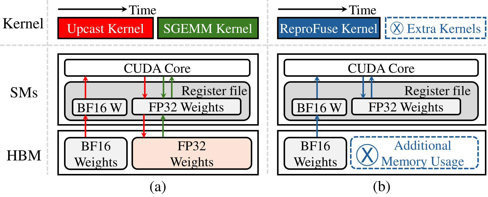
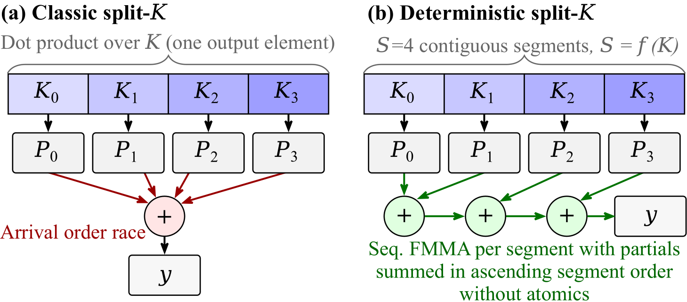
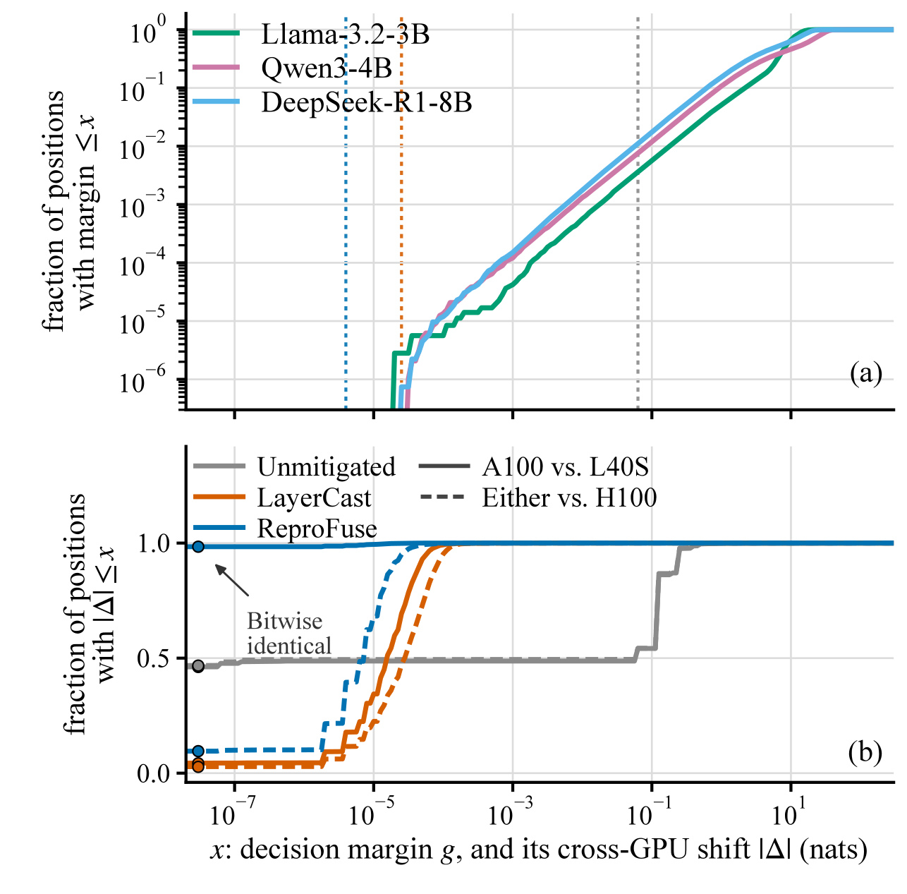
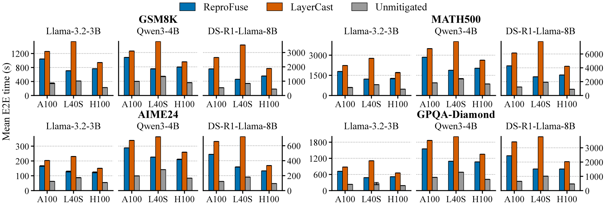
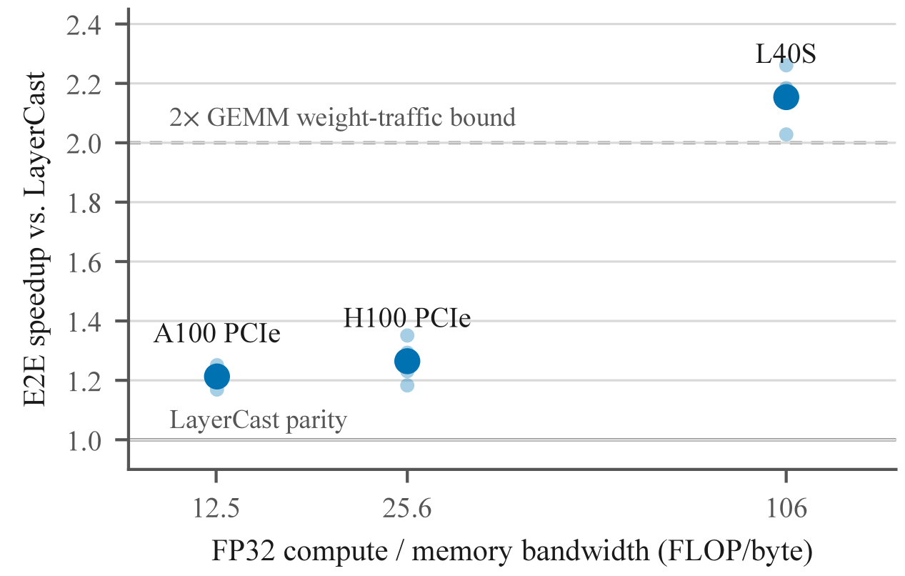

同一模型、同一prompt、贪心解码，在A100和H100上却吐出不同的token。这篇论文把元凶锁定在GEMM的归约顺序，用一套fused-upcast GEMM让三代GPU算出逐比特一致的结果，而且更快。下文拆解。
可复现是部署软件的基本预期，大模型正被越来越多假设可复现的系统所用：持续集成流水线需要一致的回归输出来区分真实行为变化与数值噪声；金融、医疗、法律等受监管行业必须能精确回放模型的每一次回答以备审计；Agent工作流靠确定性回放做撤销重做与调试。
贪心解码，即温度0、永远选概率最高的token并固定种子，按理该给出确定性输出。但即便模型权重、prompt、软件版本、贪心解码全相同，LLM输出仍会在GPU架构、GPU数量、batch size之间分叉，原因是浮点非结合性与架构相关的tensor-core累加。
BF16这类低精度格式进一步放大舍入差异：当候选token的概率接近打平时，argmax会被翻转，生成序列就此分叉。
跨GPU分叉的SOTA缓解方案是把权重存成BF16、计算全用FP32：每个线性层把权重矩阵即时上采样为FP32临时拷贝，再调厂商GEMM。这把单步舍入误差压到FP32级别，近打平时的argmax翻转变得罕见。
但该设计有两个局限。第一，拿性能换可复现：LLM解码受内存带宽限制，而GEMM实际读的是FP32临时拷贝，决定解码延迟的权重流量是全FP32的。BF16存储省的是常驻内存，内存带宽需求一点没少。
第二，可复现是统计性的而非构造性的：厂商GEMM在每种架构上仍选不同kernel、不同归约顺序，实测A100、L40S、H100算出的logits还是不一样，token只是多数时候一致，因为FP32级差异通常小到翻不动打平。
本文方案给出比SOTA更强的可复现性，开销还显著更低。
IEEE-754浮点加法每做一次就舍入一次，所以一般来说(a+b)+c ≠ a+(b+c)。长K的点积，按不同结合顺序算部分和，结果就不同，最坏误差随累加深度和求和的条件数增长。
GPU GEMM kernel把这种自由度用到极致：tile尺寸、累加器数量、split-K因子、原子归约方案都能改变结合顺序，cuBLAS这类高性能库按架构和形状启发式在几十种kernel里挑。单设备上run-to-run确定性通常有保证，但没有任何东西约束两种架构选同一个kernel。
Tensor core是第二个更深的架构相关源头。NVIDIA GPU的矩阵乘累加单元内部用截断的尾数对齐做累加，不合标准，各代中间位宽与规格化还不一样，Volta、Ampere、Ada、Hopper实测都有差异。
更隐蔽的是：现代NVIDIA GPU上的所谓FP32 GEMM，实际跑在tensor core的TF32格式上，输入被舍入到10位尾数。不显式关掉TF32，名义上的FP32流水线会悄悄继承tensor-core算术。并且这是栈里多层独立生效的，PyTorch里关TF32管不到Triton生成的kernel，每个点积操作得单独约束。反观CUDA core上的标量融合乘加指令，严格实现IEEE-754：给定操作数，每种架构算出相同的比特。
这种不对称，比特确定的标量FMA对未指定的MMA内部实现，正是本文方案的地基。
已有系统性研究首次量化了LLM推理跨GPU类型、GPU数量、batch size的分叉：BF16下贪心解码不具可复现性，AIME24准确率在12种运行配置间差9%，输出长度差9000 token，推理模型几乎100% 的题目在前约100 token内就分叉。分叉机理是归约顺序敏感的舍入遇上近打平的argmax：观测到的分叉点上，前两名概率差距不到1%，完全在BF16舍入噪声射程内。
该研究的缓解方案把权重载入FP32、线性层权重存BF16、每次matmul前即时上采样回FP32，把分叉压到3.4% 的题目以下，内存比全FP32少34%。
另一路工作把服务侧非确定性归因于缺少batch不变性：batch size变化改变GEMM切分与归约顺序，输出跟着变。其batch不变的BF16 kernel消除了设备内非确定性，代价是matmul慢约20%，但依然架构相关。本文方案同样batch不变，还进一步把算术限制在IEEE FMA里，保证跨架构逐比特一致。
LLM-42走调度器层校验：快速的非确定性解码定期与固定形状的确定性重放对账，失配则回滚，开销只落在需要确定性的请求上。但它只解决同架构的可复现。Hawkeye逆向各代tensor-core MMA指令在CPU上仿真，证实Ampere、Ada、Hopper的MMA算术各不相同。本文反其道而行：让主导kernel本身跨架构逐比特一致，省掉CPU慢速重放。
权重纯量化系统早就在GEMM里融合格式转换：INT4权重在matmul内部寄存器里反量化到FP16，为的是带宽。本文借了同一招，数值目标相反：那些kernel为吞吐按设备自调、用tensor core累加，放弃跨架构一致；本文把每个自由度钉死，让归约顺序跨设备一致。
本文方案把混合精度推理流水线的线性层，重写成固定配置的Triton GEMM kernel。SOTA方案每个线性层算的是：
y = x·W_fp32^T + b，其中W_fp32 = cast(W_bf16) …(1)
cast在每次前向都在HBM里物化一份完整FP32拷贝：多一次kernel启动、一份2|W| 的临时分配，而且GEMM读的是FP32拷贝，权重流量是FP32位宽。本文方案算的是同一个量，但把上采样融进GEMM：
y = x·up(W_bf16)^T + b …(2)
up(·) 是按tile的寄存器内上采样：每块BF16权重从HBM载入，在寄存器里拓宽到FP32，与FP32激活tile相乘，FP32累加。
权重过内存总线永远是BF16位宽，HBM里从不出现FP32大小的东西。解码期GEMM受内存带宽限制，权重又是字节大头，权重流量减半直接降低解码延迟。性能提升不附带数值妥协。

可复现靠四条设计规则，掐住设备相关变化的主要来源：
R1：只用IEEE FMA。 每个点积都用CUDA core上的IEEE-754 FMA跑，Triton每个tl.dot设input_precision=ieee。Triton对Ampere及更新架构的FP32操作数默认走TF32 tensor core，其内部累加未指定且架构相关，是跨架构分歧的来源。框架层的TF32开关传不进Triton生成的kernel，约束必须按操作加。IEEE FMA给定操作数在每种架构上比特确定，基本算术输出一致。
R2：不自调。 自调器在本地设备上benchmark候选配置、留下最快的，编译出的kernel就成了调优机器的函数。消融实测里，同一候选空间在A100、L40S、H100上跑同一搜索，9个代表形状只有3个选出相同配置；同一设备重跑同一搜索，9个里有1个自己变了答案，因为伯仲之间的候选在测量噪声下换位。split因子是标准可调旋钮，完全决定归约树；K块尺寸决定喂给它的分段边界。本文配置是编译期常量，由问题形状 (M,N,K) 的纯函数选定：解码形状与prefill形状各一套，离线调一次，所有架构钉死。
R3：确定性split-K。 解码形状的GEMM不切分归约维就吃不满GPU，但经典split-K用原子加合并部分和，顺序是调度竞态。本文把K切成S个连续段，S是K的纯函数；每段由恰好一个program顺序累加进partials工作区，第二个kernel按固定升序合并S个部分和。全程无原子操作，完整浮点归约树是形状的确定性函数，与设备、SM数、grid调度无关。
R4：构造性batch不变。 解码桶内，配置与K分段只依赖K，永不依赖batch维M。batch里同一行在batch 1到64的任何大小下跑出完全相同的FMA序列：单请求的输出逐比特独立于同批的其他请求。这正是服务系统run-to-run确定性的关键，也是SOTA厂商GEMM不具备的性质。
R1到R4合起来给出构造性可复现：给定输入、权重、形状，每个FLOP及其在归约树中的位置都由问题形状决定。跨架构可复现不再依赖FP32级舍入差异小于打平翻转阈值，只剩一个前提：每块GPU正确实现IEEE-754 FP32算术。该前提对CUDA core FP32有文档保证，实测A100、L40S、H100上所有探测形状的线性层输出逐比特一致。

还有个附带发现：SOTA公开实现把输出投影lm_head存成FP32，其权重转换过滤器只匹配注意力和MLP投影层，悄悄豁免了词表投影，违背了自称的BF16存储策略，8B模型128k词表下约1 GiB。本文对非绑定embedding的模型把lm_head存回BF16。
方案覆盖线性层，它占FLOPs大头，也是既有分析定位的分叉通道。注意力、旋转位置编码、归一化、采样器仍用引擎的FP32实现，理论上可能选架构相关代码路径，端到端实验检验残留通道在实践中是否可见。
先看kernel级验证。A100、L40S、H100上，7个GEMM形状在本文方案下全部逐比特一致：每个张量逐元素相等，每个摘要匹配。同一探针走SOTA的cast-then-cuBLAS路径，没有形状能在三架构上比特一致：A100与L40S在7个形状全分歧，分歧处88% 到99% 的输出元素不同。
batch不变性也成立：三架构上batch-M的GEMM第0行与batch-1的结果逐比特一致（M到64全测）；SOTA下第0行在A100和H100的每个M≥2都变比特：SOTA即便FP32精度也继承batch敏感，本文单请求输出与同批负载无关。
端到端12个格子：未缓解的BF16跨GPU分歧30.81% 到100%；SOTA压到1% 以内但12格里5格有残留（最高0.51%）；本文每格都不差于SOTA，线性层驱动的分歧恰为0。唯一非零格是Qwen3-4B的GSM8K 0.08%，定位到H100上未钉死的注意力kernel，还优于SOTA的0.23%。所有方法所有格子，本文跨种子分歧恒为0。
token会不会翻，只看两个量：决策裕量g(t)（最优与次优token的logit差）与跨GPU偏移 Δ(t)，位置暴露当且仅当g< Δ。模型在典型位置很自信（中位裕量 4 到 19 nats），但约 1% 的位置离打平不到 0.1 nats：不存在安全的精度：暴露比例正比于噪声，精度每高一个量级翻转少一个量级，翻转永远不会归零。
SOTA的FP32计算把偏移压低三个半量级（中位1.8e-5 nats），但几乎消不掉：只有4.0% 和2.3% 的位置逐比特相等。本文把比例反过来：340万位置上98.4% 逐比特一致，两个模型上100.000%，残余量级再小一个数量级。对H100偏移没清零（中位7.9e-6 nats）：线性层钉死了，vLLM在sm90上选的注意力、归一化、采样器kernel没钉死。
机制得到两处校验：每次跨GPU翻转事件的第一个分歧token，其中位裕量各自跟踪自家偏移（BF16下0.125 nats，SOTA下1.1e-5到7.4e-5 nats）；这套图景能预测比率：单token翻转概率p = 1/2·E[P(g<|Δ|)]，18 个非零分歧格子预测值对实测值的中位比1.5。

36个配置全测，本文比SOTA处处更快：A100和H100上1.17到1.43倍，L40S上1.6到3.1倍。roofline解释：SOTA解码读FP32位宽权重，本文读BF16位宽，可达提升随GPU的带宽受限程度涨；L40S高达106 FLOP/byte，SOTA解码被FP32权重读取主导，本文达到乃至超过2倍权重流量界：还省掉了SOTA每层cast kernel与临时分配。
这些是保守的整workload数字（含prefill，本文Triton GEMM约0.85倍cuBLAS吞吐）。实测加速比随硬件的算力带宽比单调上涨，模型预测完全命中。

内存：非绑定embedding的模型上，本文补完的BF16存储策略省约1到1.4 GiB常驻权重；SOTA的FP32临时拷贝每步产生0.4到0.7 GiB分配毛刺。固定内存预算下，vLLM把节省换成KV cache块，即4% 到7% 的KV容量。
精度：本文相对SOTA只改变FP32加法的顺序，差异是数值噪声级。Qwen3-4B两任务分数完全一致（GSM8K 93.93%、MATH500 87.2%）；对FP64参考的数值误差两者都在1e-7相对级别。
解码主导的workload上本文在L40S跑得比H100快，不反常，是三步推论。第一，本文被限制在FP32向量单元上加速：所有累加用CUDA core的IEEE-754 FMA，永不碰tensor core：L40S单SM FP32吞吐三卡最高，H100的tensor-core主优势被拿掉。第二，解码算术强度很低（M=32，低于三卡ridge点）。第三，真正的约束是占用率：小GEMM填不满H100的SM阵列，大片设备闲置；L40S单SM吞吐高反而保持忙碌：单层实测五个投影四个打平或超过H100。
唯一的例外恰恰佐证解释：lm head输出维N=128256宽到能填满H100的SM阵列，那里H100更快。反转只存在于小batch解码的低强度、低占用区间；batch长大或prefill期，H100拿回预期优势。这是tensor-core-free约束下内存与占用受限解码的性质，不是两卡通用排名。

参考：https://arxiv.org/html/2609.25624v1